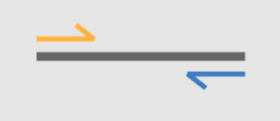

11 NGS data quality control
This practical will provide hands-on experience with quality control of high-throughput sequencing data. You will learn how to:
Import, visualize, and assess the quality of raw sequencing reads generated by Illumina and Nanopore platforms.
Distinguish between good and bad sequencing data and identify potential issues in raw data prior to downstream analysis.
Perform basic read filtering and trimming to prepare data for further analysis.
11.1 Obtain some high-throughput sequencing data
For this practical we will need to download some training sequencing data. We will use the following data (Bioproject PRJNA675888) associated with this article:
Illumina: SRA paired-end dataset SRR13070681
Nanopore: SRA ONT dataset SRR13070731
First you will need to create a data/ directory in your home folder. Within this directory create two sub-directories one for Illumian and one for the nanopore data.
mkdir -p ~/data/illumina
mkdir -p ~/data/nanoporeOption 1. Browser Navigate to the European Nucleotide Archive (ENA) and search for the sra accession numbers (). Download the files and move them to the respective directory.
Option 2. You can use the command line to download the data.
# For the Illumina dataset
cd ~/data/illumina
wget -nc ftp://ftp.sra.ebi.ac.uk/vol1/fastq/SRR130/081/SRR13070681/SRR13070681_1.fastq.gz
wget -nc ftp://ftp.sra.ebi.ac.uk/vol1/fastq/SRR130/081/SRR13070681/SRR13070681_2.fastq.gz
# For the nanopore dataset
cd ~/data/nanopore
wget -nc ftp://ftp.sra.ebi.ac.uk/vol1/fastq/SRR130/031/SRR13070731/SRR13070731_1.fastq.gzWhat do the _1 and _2 in the Illumina dataset mean?
Most Illumina sequencing is paired-end, meaning that after DNA fragmentation, both ends of each fragment are sequenced. This produces two reads for each DNA fragment: one read from one end of the fragment (_1, read 1) and a second read from the opposite end (_2, read 2).

11.2 Short-read data QC (Illumina)
We can inspect the fastq files
# make sure you are directory ~/data/illumina
pwd
# read the 10 first sequences
zcat SRR13070681_1.fastq.gz | head -40We can now generate some quality metrics for our data using the tool FastQC. For each file, FastQC will produced both a .zip archive containing all the plots, and a html report. You can run FastQC on the two files together or individually.
mkdir fastqc_output
fastqc -o fastqc_output *.fastq.gzQuestions:
- How many total reads are in both files?
- What is the length of the read?
- Which read files is of better quality?
11.2.1 Quality control
Quality control generally comes in two forms: 1. Trimming: involves removing poor quality bases from the reads (usually the ends) 2. Filtering: involves removing whole sequences either due to poor quality or they are too short
To carry this out we will use sickle. Let’s first have a look on the documentation page of sickle.
sickle --help
# You can run now sickle with the Illumina reads using the following command.
sickle pe -t sanger -f SRR13070681_1.fastq.gz -r SRR13070681_2.fastq.gz -o SRR13070681_1_Q28_MinL100.fastq.gz -p SRR13070681_2_Q28_MinL100.fastq.gz -s SRR13070681_unpaired.fastq.gz -q 28 -l 100We can now re-run fastqc on the trimmed dataset.
mkdir sickle_fastqc_output
fastqc -o sickle_fastqc_output SRR13070681_*_Q28_MinL100.fastq.gzBonus. We can use the tool MultiQC to aggregate all the FastQC reports into one html report.
multiqc ~/data/illumina/fastqc_output ~/data/illumina/sickle_fastqc_output11.3 Long-read data QC (Oxford Nanopore)
Exercise
Check the quality of the Nanopore dataset. How does it differ from the Illumina reads?
Subsampling the sequencing data
Sometimes ngs data can be quite large. In this cases it is useful to downsample the data to a more manageable dataset.
We can use the tool seqkit to do this.
# we can do this by number
zcat file.fastq.gz | seqkit sample -n 100000 -o sample.fastq.gz
# or by proportion e.g. 10%
zcat file.fastq.gz | seqkit sample -p 0.1 -o sample.fastq.gz